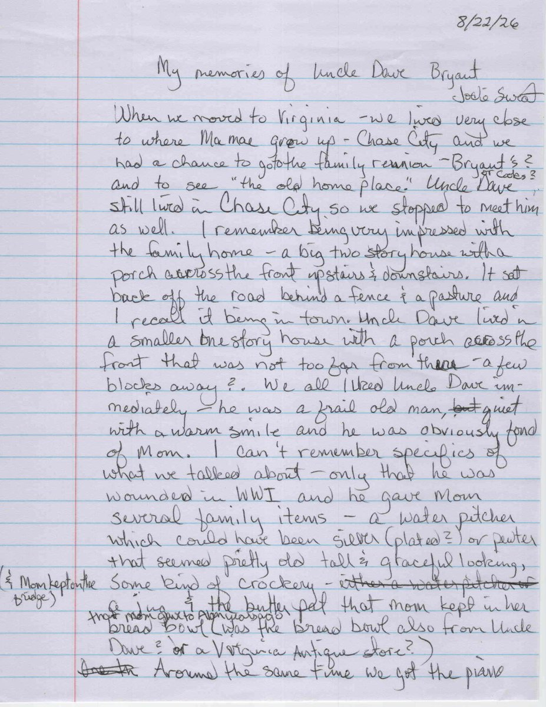

A boy of twelve stood at an old man’s fireplace and asked him about the war. He got answers. He did not get the whole of it.
By John Gladin · with the recollections of Jodie Sweat
He was a thin man with a warm personality, in a tidy older house with a nineteen-fifties car in the driveway. My sister was eleven. I was twelve. We stood with our mother in front of his fireplace and talked, and because I was twelve and knew that the First World War had involved poison gas, I asked him about poison gas.
He answered. Briefly, and kindly, and only what I asked.
Fifty-six years later my sister Jodie wrote down what she remembered, without either of us comparing notes first. Two children, two memories, one room.
Uncle Dave still lived in Chase City, so we stopped to meet him as well… We all liked Uncle Dave immediately — he was a frail old man, quiet with a warm smile and he was obviously fond of Mom. I can’t remember specifics of what we talked about — only that he was wounded in WWI and he gave Mom several family items — a water pitcher which could have been silver (plated?) or pewter that seemed pretty old, tall & graceful looking, some kind of crockery — & the butter pat that mom kept in her bread bowl. Jodie Sweat, written recollection, 22 August 2026

Between us we have: a big two-storey house with porches upstairs and down, set back behind a fence and a pasture. A smaller one-storey house a few blocks off, with a porch across the front. A frail, thin, quiet man with a warm smile who was plainly fond of our mother. A pitcher, some crockery, a butter pat. A fireplace. And the fact that he had been wounded in the First World War.
That is the whole of it. Two children got a kind afternoon and a few pieces of family silver, and nobody said anything else.
There were three of them, sons of William Joseph Bryant and Nancy E. Moore, born in Caldwell County, North Carolina, and raised at Chase City, Virginia. On 5 June 1917 all three walked into the same precinct on the same day and registered for the draft in front of the same registrar.
Twenty-eight, married, a wife and two children, farming and saw-milling for his father’s firm. He claimed exemption as a family man and it was allowed. My great-grandfather.
Twenty-three. A corporal in the Virginia state troops before the war; a first sergeant in France within a year of induction. The man at the fireplace.
Twenty-one, short, blue-eyed, light-haired, and working for his father like the others. He signed himself Alex. Nobody in my hearing ever spoke of him.
This account follows the order in which I found things out, not the order in which they happened. When we stood at that fireplace in about 1970, we knew there had been a war and that the old man had been wounded in it. We did not know the rest. Neither will you, for a while.
Everything here rests on documents — draft cards, passenger lists, a morning report, a pay roll, a state questionnaire and two regimental histories. Where something is uncertain, the page says so. Where the family account and the paperwork disagree, both are given. The Sources page lists every record and every correction, and it does not withhold anything — if you would rather know now, it is all there.